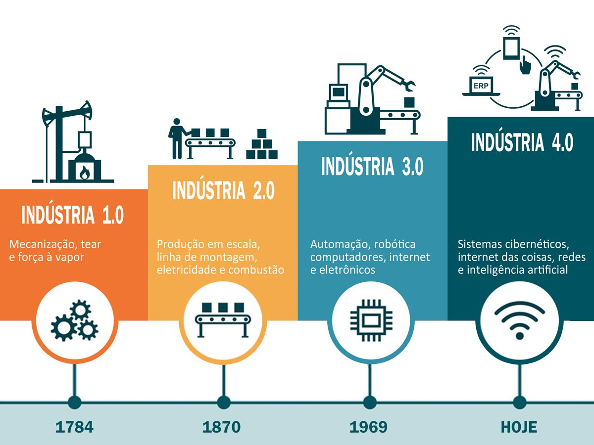

Introdução
A Indústria 4.0 nos mostra que é um grande erro pensar que a tecnologia já evoluiu ao nível
máximo na
indústria.
O termo é utilizado para caracterizar a utilização do que há de mais moderno para produzir bens
de
consumo: big data, internet das coisas, inteligência
artificial e muito mais.
Em suma, é a continuação do aperfeiçoamento das máquinas, um processo
que começou na primeira Revolução Industrial e nunca mais parou.
Neste artigo, trataremos de explorar a fundo o mundo da indústria 4.0 e seus
impactos na vida de todos nós. Partindo do ponto de vista de que o avanço da
tecnologia é inevitável e, por isso, não deveria ser encarado como uma
coisa ruim.
Princípios da Indústria 4.0
Existem seis princípios para o desenvolvimento e implantação da industria 4.0, que definem os sistemas de
produção inteligentes que tendem a surgir nos próximos anos.
São eles:
Capacidade de operação em tempo real
Na aquisição e tratamento de dados de forma praticamente instantânea, permitindo a tomada de decisões em
tempo real.
Virtualização
Simulações já são utilizadas atualmente, assim como sistemas supervisórios. No entanto, a industria 4.0
propõe a existência de uma cópia virtual das fabricas inteligentes. Permitindo a rastreabilidade e
monitoramento remoto de todos os processos por meio dos inúmeros sensores espalhados ao longo da planta.
Descentralização
A tomada de decisões poderá ser feita pelo sistema cyber-físico de acordo com as necessidades da
produção em tempo real. Além disso, as máquinas não apenas receberão comandos, mas poderão fornecer
informações sobre seu ciclo de trabalho. Logo, os módulos da fabrica inteligente trabalharão de forma
descentralizada a fim de aprimorar os processos de produção.
Orientação a serviços
Utilização de arquiteturas de software orientadas a serviços aliado ao conceito de Internet of Services.
Modularidade
Produção de acordo com a demanda, acoplamento e desacoplamento de módulos na produção. O que oferece
flexibilidade para alterar as tarefas das máquinas facilmente.
Pilares da Industria 4.0
Com base nos princípios acima, a industria 4.0 é uma realidade que se torna possível devido aos avanços
tecnológicos da última década, aliados às tecnologias em desenvolvimento nos campos de tecnologia da
informação e engenharia. As mais relevantes são:
As mais relevantes são:
Internet das coisas (Internet of Things – IoT)
Consiste na conexão em rede de objetos físicos, ambientes, veículos e máquinas por meio de dispositivos
eletrônicos embarcados que permitem a coleta e troca de dados. Sistemas que funcionam a base da Internet
das Coisas e são dotados de sensores e atuadores são denominados de sistemas Cyber-físicos, e são a base
da industria 4.0.
Big Data Analytics
São estruturas de dados muito extensas e complexas que utilizam novas abordagens para a captura, análise
e gerenciamento de informações. Aplicada à industria 4.0, a tecnologia de Big Data consiste em 6Cs para
lidar com informações relevantes
- Conexão (à rede industrial, sensores e CLPs)
- Cloud (nuvem/dados por demanda)
- Cyber (modelo e memória)
- Conteúdo,Comunidade (compartilhamento das informações)
- Customização (personalização e valores)
Segurança
Um dos principais desafios para o sucesso da quarta revolução industrial está na segurança e robustez
dos sistemas de informação.
Problemas como falhas de transmissão na comunicação máquina-máquina, ou até mesmo eventuais “engasgos”
do sistema podem causar transtornos na produção.
Com toda essa conectividade, também serão necessários sistemas que protejam o know-how da companhia,
contido nos arquivos de controle dos processos.
As 3 primeiras revoluções industriais trouxeram :
- A produção em massa
- As linhas de montagem
- A eletricidade
- E a tecnologia da informação
Elevando a renda dos trabalhadores e fazendo da competição tecnológica o cerne do desenvolvimento econômico.
A quarta revolução industrial, que terá um impacto mais profundo e exponencial, se caracteriza, por
um conjunto de tecnologias que permitem a fusão do mundo físico, digital e biológico.

E as principais tecnologias que permitem a fusão dos mundos físico, digital e biológico são
- 3D Manufatura Aditiva
- IA Inteligência Artificial
- IoT Internet das Coisas
- SynBio Biologia Sintética
- CPS Sistemas Ciber-físicos
Desafios e expectavivas
Há grandes desafios para a economia brasileira,
em especial para a indústria, que enfrentou adversidades recentemente.
Apesar disto, os dados apontam a quarta revolução industrial como uma oportunidade para o país.
Relatório "Readiness for the Future of Production Report 2018" (WEF) mostra o país na 41ª posição em
termo da estrutura de produção e na 47ª posição nos vetores de produção da indústria.
Possuímos países que tem alto potencial para o futuro da indústria, países que lideram o processo,
países nascentes no tema e países que possuem um relativo legado industrial, mas estão mais distantes da
corrida para a 4º revolução industrial. Interessante que o Brasil se situa na interface deste quadrante,
possuindo potencial para melhorar sua posição nesta nova economia.
Cada indústria deve perseguir uma estratégia dual, em que se muda o presente e se constrói o futuro
Impacto
Um dos maiores impactos causados pela indústria 4.0 será uma mudança que afetará o mercado como um todo.
Consiste na criação de novos modelos de negócios. Em um mercado cada vez mais exigente, muitas empresas já
procuram integrar ao produto necessidades e preferências específicas de cada cliente. A customização prévia
do produto por parte dos consumidores tende a ser uma variável a mais no processo de manufatura, mas as
fábricas inteligentes serão capazes de levar a personalização de cada cliente em consideração, se adaptando
às preferências.
Outro ponto que será abalado pela quarta revolução industrial será a pesquisa e desenvolvimento nos campos
de segurança em T.I., confiabilidade da produção e interação máquina-máquina.
A tecnologia deverá se desenvolver continuamente para tornar viável a adaptação de empresas a
este novo padrão de indústria que está surgindo.
Os profissionais também precisarão se adaptar, pois com fábricas ainda mais automatizadas novas
demandas surgirão enquanto algumas deixarão de existir. Os trabalhos manuais e repetitivos já vem sendo
substituídos por mão de obra automatizada, e com indústria 4.0 isso tende a continuar. Por outro lado, as
demandas em pesquisa e desenvolvimento oferecerão oportunidades para profissionais tecnicamente capacitados,
com formação multidisciplinar para compreender e trabalhar com a variedade de tecnologia que compõe uma
fábrica inteligente.
Os impactos da Indústria 4.0 sobre a produtividade, a redução de custos, o controle sobre o processo
produtivo,
a customização da produção, dentre outros, apontam para uma transformação profunda nas plantas fabris.
Redução total
A retomada do crescimento econômico em 2018
O Brasil passou por uma das maiores recessões econômicas da sua história.
Porém, devido ao conjunto das reformas econômicas em curso, os indicadores econômicos já demonstram
forte recuperação de nossa economia,
o que impactará os investimentos da indústria brasileira.
Bens de capital e de consumo duráveis lideram retomada industrial.
Crescimento da produção física industrial a partir do segundo semestre de 2017, com grande participação
do crescimento da produção de bens de capital e de consumo duráveis.
GTI - Grupo de trabalho da Indústria 4.0
Diante deste cenário, o MDIC instituiu, em junho de 2017, o Grupo de Trabalho para a Indústria 4.0 (GTI
4.0), com o objetivo de elaborar uma proposta de agenda nacional para o tema.
O GTI 4.0 possui mais de 50 instituições representativas (governo, empresas, sociedade civil organizada,
etc), por onde ocorreram diversas contribuições e debates sobre diferentes perspectivas e ações para
a Indústria 4.0 no Brasil.
Temas prioritários como aumento da competitividade das empresas brasileiras, mudanças na estrutura das
cadeias produtivas, um novo mercado de trabalho, fábricas do futuro, massificação do uso de tecnologias
digitais,
startups, test beds, dentre outros foram amplamente debatidos e aprofundados neste GTI 4.0.
Conclusão
Conclui-se, que apesar dos desafios que o Brasil e o mundo têm encontrado para a implantação da
indústria
4.0, para aumentar a produtividade e o desenvolvimento do país, ainda assim é possível realizar esta
mudança
e preparando a nação para os desafios do futuro, como disse o ativista social Nelson Mandela “A educação
é a
maior arma para se mudar o mundo”, neste sentido o país deve investir em educar, conscientizar e
preparar a
sociedade para este novo conceito, gerando valor, capacitando a sociedade, e transformando um futuro
melhor.